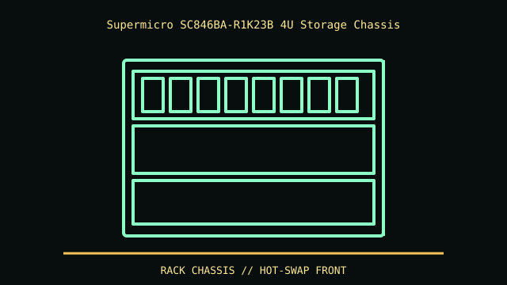

[ IDENTIFIED ENCLOSURE // SUPERMICRO SUPERCHASSIS SC846BA-R1K23B ]
Supermicro SC846BA-R1K23B 4U Storage Chassis
4U (178 mm) chassis; width 437 mm and depth around 660–673 mm depending on selected backplane/cabling. Verify exact revision and rail clearance before rack installation.

REVISION / FIT CAVEAT: SC846BA-R1K23B differs from SC846BE1C and other backplane/PSU options. Exact label defines backplane generation, power module and included rails.
Model-specific mechanical record
| Catalog leaf | Rack server enclosures |
|---|---|
| Identity / generation | Supermicro SuperChassis SC846BA-R1K23B |
| Dimensions / clearance | 4U (178 mm) chassis; width 437 mm and depth around 660–673 mm depending on selected backplane/cabling. Verify exact revision and rail clearance before rack installation. |
| Drive bays / mounts | 24 front hot-swap 3.5-inch SAS/SATA positions; optional rear 2.5-inch or internal fixed positions depend on specific chassis/backplane. |
| Board / chassis compatibility | E-ATX/ATX/microATX board support varies by SC846 submodel. Backplane expander, PSU and fan wall are SKU-specific; check board and riser against chassis manual. |
| Revision identification | SC846BA-R1K23B differs from SC846BE1C and other backplane/PSU options. Exact label defines backplane generation, power module and included rails. |
Compatibility and preservation
E-ATX/ATX/microATX board support varies by SC846 submodel. Backplane expander, PSU and fan wall are SKU-specific; check board and riser against chassis manual.
Preserve numbered trays, backplane and fan wall as a matched set. Large 4U chassis is heavy; use rack lift support and retain the original drive order/mapping.
Before transfer or restoration, photograph the complete model label, assembly/board revisions, bay/backplane identifiers and included accessories. Measure the actual specimen when planning installation or shipping; nominal envelope figures may exclude protruding feet, rails, doors or cables.
Manufacturer manuals and archival sources
- Supermicro SC846BA-R1K23B exact model specificationsModel-specific manufacturer specification, service manual, or technical reference used for the listed dimensions and mechanical configuration.
- Supermicro SC846 family specifications and manualsSupplemental model documentation or institutional/technical archival record; use the exact product code and manual revision for a specimen.
Listings distinguish base configuration from optional drive, PSU, fan, rack and accessory kits. Do not combine maximum capacities if cages or components occupy the same volume.